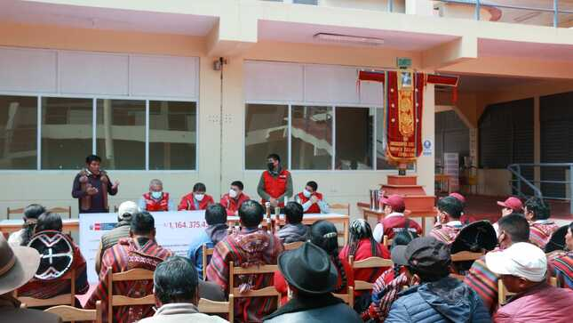
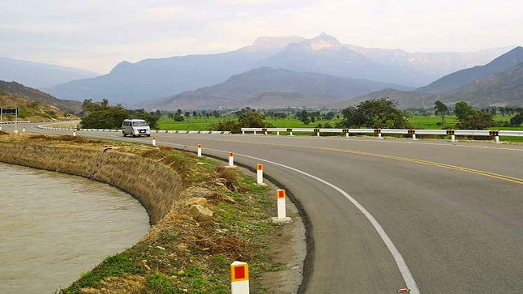
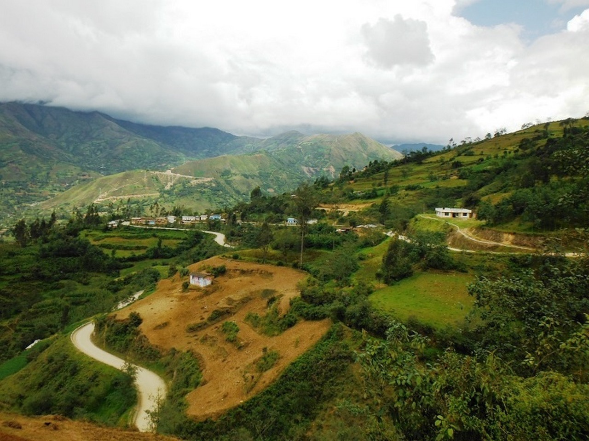
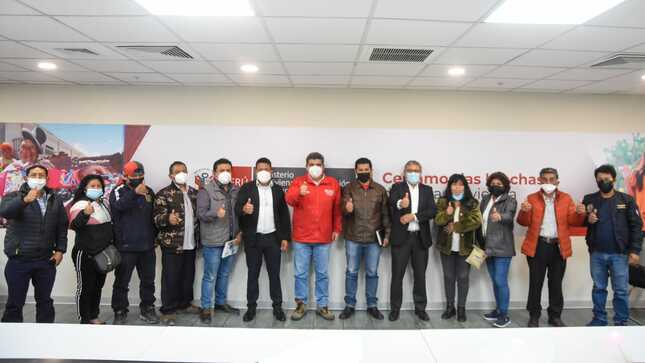

Viceministro de Comunicaciones impulsará la inclusión digital
27 de agosto del 2022
MTC trabaja en una solución para el aeropuerto de Juliaca
27 de agosto del 2022

MTC entrega cheques por adquisición de terrenos
27 de agosto del 2022

Se suscribe el contrato del corredor vial Pimentel – Cutervo
27 de agosto del 2022

Estudio de la carretera Puente Rancho – Chaglla – Rumichaca
27 de agosto del 2022
Aprueban la modificación del Reglamento del Índice del Verificador Catastral
27 de agosto del 2022

En setiembre estará listo el proyecto de agua y desagüe para Ate y Santa Anita
27 de agosto del 2022